鍼灸、整骨、接骨、美容鍼灸、マッサージ、整体、カイロプラクティック、O脚矯正、不妊、エステでお困りの方はTeaching Beauty鍼灸マッサージ整骨院へ。
電話でのご予約・お問い合わせはTEL.03-6413-7803
〒154-0014 東京都世田谷区新町3-21-1さくらウェルガーデン301号室
患者様の声Voice of the patient
世田谷区在住 35歳 棚辺美宝様 急性低音性感音性難聴
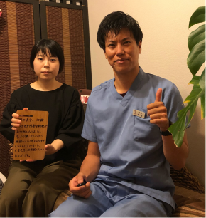
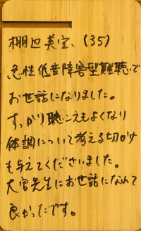
【棚辺美宝様の口コミ】
突発性難聴と病院で言われたが急性低音性感音性難聴であることをこちらの鍼灸院でわかりました。
急性低音障害型難聴でお世話になりました。
すっかり聞こえもよくなり、体調について考えるきっかけも与えて下さいました。
大宮先生にお世話になれてよかったです。
埼玉県和光市 ４1歳 M,W様 全前置胎盤
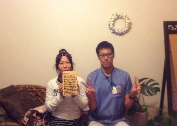
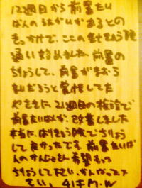
【患者様の口コミ】
12週目から前置胎盤の疑いがあるとのきっかけで、こちらの鍼灸院に通い始めました。
前置胎盤の治療を続けながらも前置胎盤は治らないだろうと覚悟していた矢先に、
21週目の検診で前置胎盤が完全に改善していました。
本当にこちらの鍼灸院で治療して良かったです。
前置胎盤でお困りの患者さん希望を持って治療して下さい。頑張ってください！！
横浜市在住 30代 根岸明日香様 突発性難聴、めまい、耳鳴り
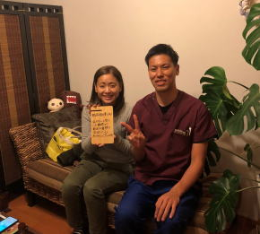
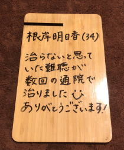
【根岸明日香様の口コミ】
治らないと思っていた突発性難聴が2回の通院で完治しました。
ありがとうございました。
稲毛市在住 50代 岡島猛様 突発性難聴、耳鳴り
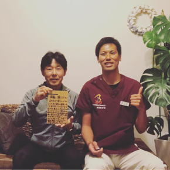
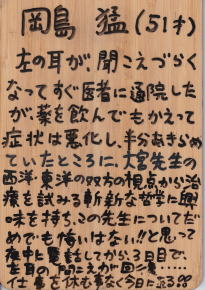
【岡島猛様の口コミ】
左耳が急に聞こえづらくなって、すぐに医者に通院したが、薬を飲んでもかえって症状が悪化し、半ば諦めていたところ、大宮先生の西洋・東洋の双方の視点から治療を試みる斬新な哲学に興味を持ち、この先生に診てもらってダメでも悔いはない！！
と思って電話してから、3日目で左耳の聞こえが通常聴力まで回復。
仕事を休むことなく今日に至る。
名古屋市在住 30代 M．K様 全前置胎盤・逆子
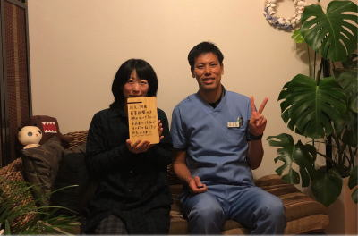
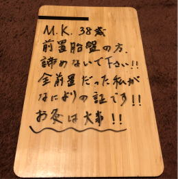
【患者様の口コミ】
前置胎盤で悩んでいる方、諦めないでください！！
全前置胎盤だった私が6日間の治療で前置胎盤と逆子が治ったのでそれが何よりの証です。
お灸は大事！！
世田谷区在住 10代 M,K様 女性 婦人科系 鍼灸施術
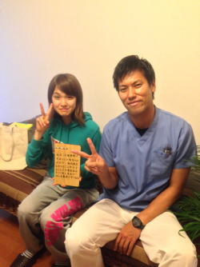
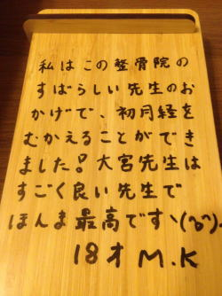
【患者様の口コミ】
私はこの整骨院のすばらしい先生のおかげで、初月経をむかえることができました。
大宮先生はすごく良い先生です。ほんま最高です。＼(^o^)／
埼玉県 浦和市 30代女性 小顔矯正
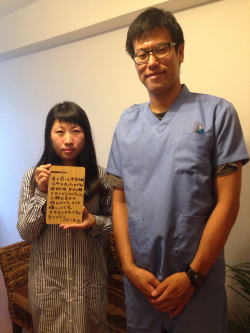
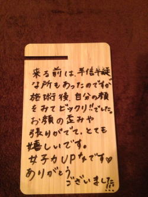
【患者様の口コミ】
来院する前は、半信半疑な所もあったのですが施術後、自分の顔をみて
ビックリ！！でした。
お顔の歪みや張りがでて、とても嬉しいです。
女子力UP☆です?
ありがとうございました！！！
日頃の過ごし方もアドバイスいただいて、とても感謝しています。
世田谷区在住 40代男性 たかし様 （妻42歳） 男性不妊症
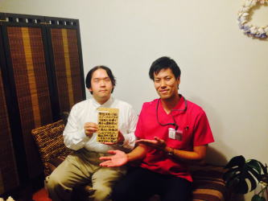
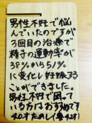
【患者様の口コミ】
男性不妊で悩んでいたのですが3回目の治療で静止の運動率が38％から51％に変化して妻が妊娠することができました。
男性不妊で困っている方はオススメです。
世田谷区在住 31歳 朋子様 急性ギックリ腰
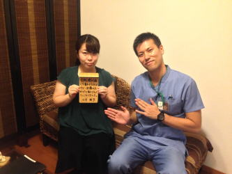
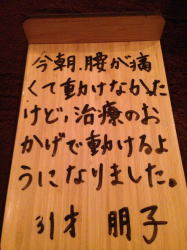
【患者様の口コミ】
今朝、腰が痛くて全く動けなかったけど、鍼灸治療のおかげで
動けるようになりました。
埼玉県和光市在住 30代・男性 あきえ様 安産治療・風邪治療
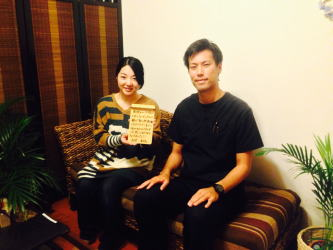
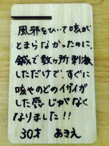
【患者様の口コミ】
風邪を引いて咳がなかなか止まらなかったのに、鍼で数か所刺激しただけで、すぐに咳や
喉のイガイガした感じがなくなりました！！
江戸川区在住 33歳女性 Y、T様 全前置胎盤、逆子
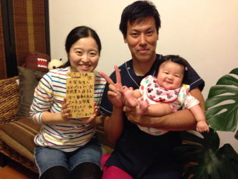
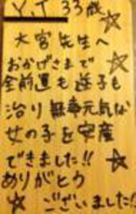
【患者様の口コミ】
大宮先生へ
おかげさまで全前置胎盤も逆子も治り無事に元気な女の子を安産にて出産することができました。
ありがとうございました。
立川市在住 30代女性 M,S 低置胎盤、腰痛
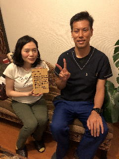
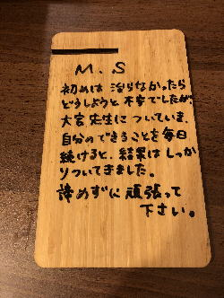
【患者様の口コミ】
初めは治らなかったらどうしようと不安でしたが、大宮先生に付いていき、自分のできることを毎日続けると、低置胎盤も治り結果はしっかりついてきました。
前置胎盤で悩んでいる方は諦めず頑張って下さい。
足立区在住 30代女性 K,I様 全前置胎盤
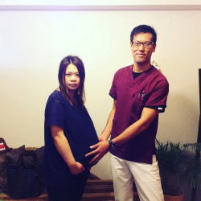
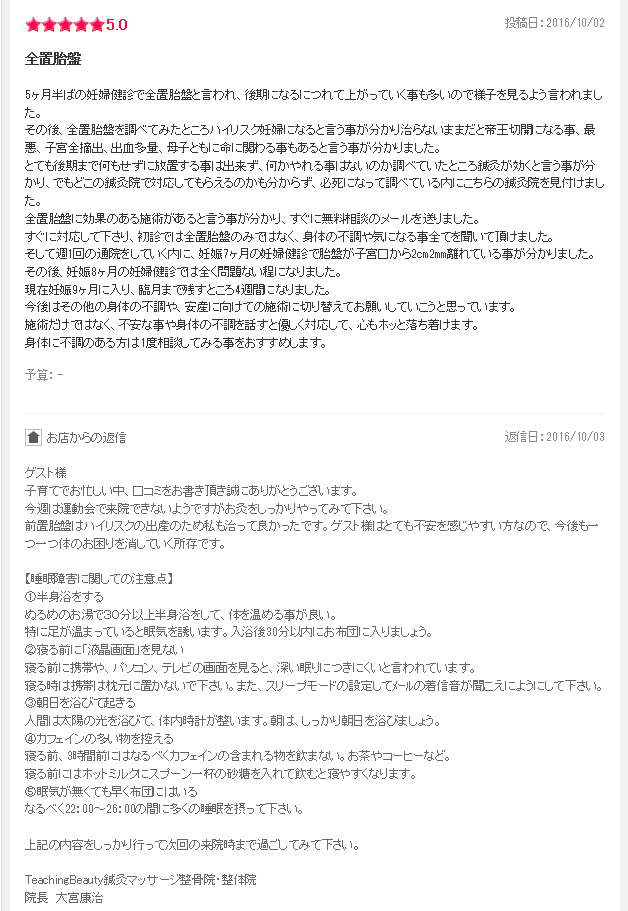
【患者様の口コミ】
5ヶ月半ばの妊婦健診で前置胎盤と言われ、後期になるにつれて胎盤の位置が上がっていく事も多いので様子を見るように担当医から言われました。
その後、前置胎盤をネットで調べてみたところハイリスクな出産になるという事が分かり、前置胎盤が治らないままだと帝王切開なる事や子宮の全摘、出血多量など、母子ともに命に関わる事もあると言うことが分かりました。
とても後期まで何もせずに放置することは出来ず、何かやれることはないのかと調べていた所、鍼灸が前置胎盤によい事がわかり、でもどこの鍼灸院で対応してもらえるのかも分からず、必死になって調べているうちに事らの鍼灸院を見つけました。
前置胎盤に効果のある施術があるということが分かり、すぐに無料相談のメールを送りました。
すぐに対応してくださり、初診では前置胎盤のみではなく、体の不調や気になる事全てを聞いて頂けました。
そして、週1回の通院をしていくうちに、妊娠7ヶ月の妊婦検診で胎盤が子宮口から2.2ｃｍ離れている事がわかりました。
現在は妊娠9ヶ月に入り、臨月まであと4週間になりました。
今後はその他の体の負傷や、安産に向けての施術に切り替えてお願いしていこうと思っています。
施術だけではなく、不安な事や体の不調を話すと優しく対応して、心もホッと落ち着けます。身体に不調のある方は1度相談してみることをオススメします。
世田谷区在住 27歳女性 ゆい様 エステ痩身（女性スタッフ施術）
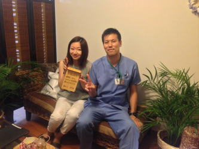
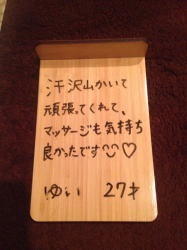
【患者様の口コミ】
エステの時に沢山汗をかきながらスッタフの方が頑張ってくれて、マッサージがとても気持ちよかったです。
世田谷区在住 70代女性 M様 急性ぎっくり腰
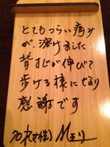
【患者様の口コミ】
今朝からとてもつらいギックリ腰で歩くのもやっとで、とてもつらい痛みが鍼灸をしてもらって溶けました。こちらに伺うまでは腰を曲げていましたが、背筋が伸びて普通に歩けるようになりました。感謝です。
世田谷区在住 ４0代女性・男性 大石様 御夫妻
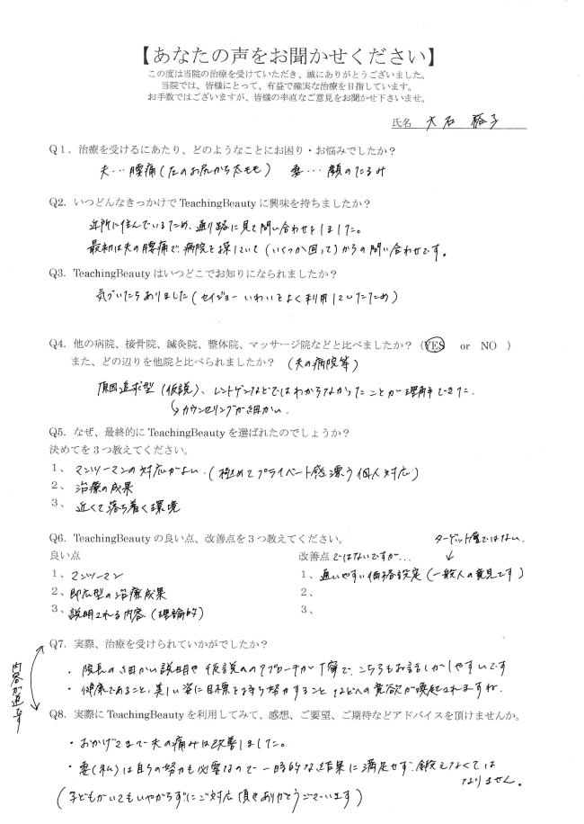
【患者様の口コミ・患者様の声 大石様ご夫妻様 40代 女性・男性】
1、治療を受けるにあたり、どのようなことにお困り・お悩みでしたか？
夫・・・腰部椎間板ヘルニア：鍼灸治療
妻・・・顔のたるみ：お顔のリフトアップ+顔鍼
２、いつどんなきっかけでTeaching Beauty鍼灸整骨院に興味を持ちましたか？
近所に住んでいるため、通り路に看板を見て問い合わせをしました。
最初は夫の腰痛で、いくつかの病院を探していて（いくつか回って）からの問い合わせです。
３、TeachingBeauty鍼灸整骨院はいつどこでお知りになりましたか？
気づいたらありあました。（下にあるココカラファインをよく利用したいるため）
４、他の病院、接骨院、整体院、マッサージ院などと比べましたか？
はい
また、どのあたりを他院と比べましたか？
・夫が通院していたため。
・原因追求（仮設）カンセリングが細かい。
・病院でﾚﾝﾄｹﾞﾝを撮影してもあまり理解出来なかったのですが、院長先生の説明を聞いて理解が出来た。
５、なぜ、最終的にTeachingBeauty鍼灸整骨院を選ばれたのでしょうか？
①マンツーマン対応がよい（極めてプライベート感漂う個人対応）
②治療の成果
③近くて落ち着く環境
6、TeachingBeauty鍼灸整骨院の良い点、改善点を３つ教えてください。
【良い点】
①マンツーマン対応
②即効型の治療成果
③説明される内容（理論的）
【改善点】
①通いやすい価格設定だと嬉しいという希望です。
7、実際、治療を受けられていかがでしたか？
・おかげさまで夫の痛みは改善しました。
・妻（私）は自らの努力も必要なので一時的な結果に満足せずお顔の筋肉を鍛えなくてはならないと実感しております。
（子供がいても嫌がらずに対応して頂きありがとうございます。）
8、実際にTeachingBeauty鍼灸整骨院を利用してみて、感想、ご要望、ご期待などのアドバイスをいただけませんか？
・大宮院長の細かい説明や仮設へのアプローチが丁寧で、こちらもお話がしやすいです。
・健康であること、美しい容姿に目標を持ち努力することなどへの意欲が喚起されますね。
江東区在住 ４0代男性 太田光一様

【患者様の口コミ・患者様の声 太田様 40代 男性】
1、治療を受けるにあたり、どのようなことにお困り・お悩みでしたか？
急性ぎっくり腰・急性ギックリ腰：鍼灸治療、姿勢矯正
腰の痛みが辛くて困っていた。
２、いつどんなきっかけでTeaching Beauty鍼灸整骨院に興味を持ちましたか？
友人に腰痛で困っていると相談したら、こちらの院を紹介されて。
３、TeachingBeauty鍼灸整骨院はいつどこでお知りになりましたか？
友人の紹介で
４、他の病院、接骨院、整体院、マッサージ院などと比べましたか？
はい
また、どのあたりを他院と比べましたか？
今まで整形外科、整骨院、マッサージ院と色々通ってみたがすぐに痛みが戻ってしまうので困っていた。
他院と比べてた点は治療後の結果です。1回目からかなり改善が得られました。ありがとうございます。
５、なぜ、最終的にTeachingBeauty鍼灸整骨院を選ばれたのでしょうか？
①何が原因で現在の痛みが出ているかを細かく教えてくれる。
②しっかりと話しを聞いてくれる。
③完全予約制なので他の患者さんがいないので落ち着く。
6、TeachingBeauty鍼灸整骨院の良い点、改善点を３つ教えてください。
【良い点】
①日常の運動法などの細かなアドバイスをくれる。
②痛みがなくなる。
③大宮先生の知識が豊富なので安心する。
【改善点】
①自宅から少し遠い（自己都合ですが・・・）
7、実際、治療を受けられていかがでしたか？
初回はぎっくり腰になってしまってこちらに伺うこともやっとだったのに、30分もしないうちに大宮先生が
動いてみてと言って動いてみたら動けてビックリしました。
そのおかげもあり、痛みもほとんどなくなり次の日に普通に仕事に行けたので大変助かりました。
8、実際にTeachingBeauty鍼灸整骨院を利用してみて、感想、ご要望、ご期待などのアドバイスをいただけませんか？
今後ともよろしくお願いします。
頼りにしています。
北区在住 30代女性 眞弓佳子様
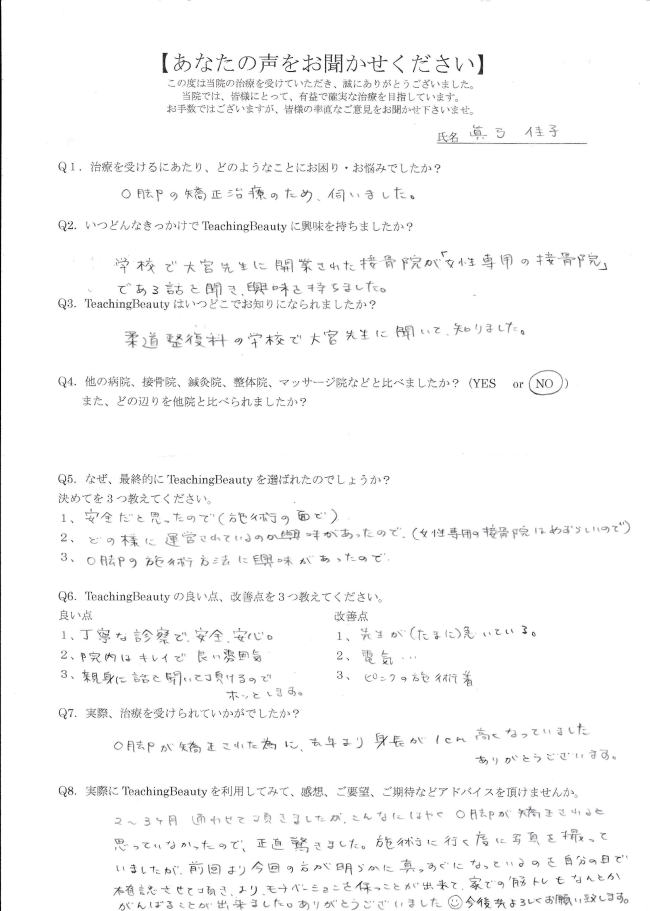
【患者様の口コミ・患者様の声 真弓様 30代 女性】
1、治療を受けるにあたり、どのようなことにお困り・お悩みでしたか？
O脚矯正
O脚の治療矯正のため伺いました。
２、いつどんなきっかけでTeaching Beauty鍼灸整骨院に興味を持ちましたか？
柔道整復師養成施設で大宮先生が開業された整骨院が「女性専門の整骨院」である話を聞いて興味を持ちました。
３、TeachingBeauty鍼灸整骨院はいつどこでお知りになりましたか？
柔道整復師養成施設の大学校にへ大宮先生に聞いて知りました。
４、他の病院、接骨院、整体院、マッサージ院などと比べましたか？
いいえ
また、どのあたりを他院と比べましたか？
ありません。
５、なぜ、最終的にTeachingBeauty鍼灸整骨院を選ばれたのでしょうか？
①施術面で安全だと思っていたので
②どのように運営されているのか興味があったので（女性専用の整骨院は珍しいので）
③O脚の施術方法に興味があったので
6、TeachingBeauty鍼灸整骨院の良い点、改善点を３つ教えてください。
【良い点】
①丁寧な診察で、安心、安全。。
②院内が綺麗で良い雰囲気
③親身になって話を聞いて頂かるのでホッとします。
【改善点】
①大宮先生がたまに急いでいます。（現在は改善済み）
②電気が少し痛い・・・（現在は改善済み）
③大宮先生のピンク色の施術着（現在も使用中）
7、実際、治療を受けられていかがでしたか？
O脚が矯正されたためか、去年より身長が1ｃｍ高くなって身長が伸びていました。
ありがとうございます。
8、実際にTeachingBeauty鍼灸整骨院を利用してみて、感想、ご要望、ご期待などのアドバイスをいただけませんか？
2～3ヶ月通わさせて頂きましたが、こんなに早くO脚が矯正されるとは思っていなかったので、正直驚きました。施術に行くたびに写真を撮っていましたが、前回より今回のほうが明らかに脚がまっすぐになっているのを自分の目で確認させて頂き、よりモチベーションを保つことが出来ました。
そのおかげで自宅での筋トレもなんとか頑張ることが出来ました。
今後共よろしくお願いします。
世田谷区在住 40代女性 K, I様
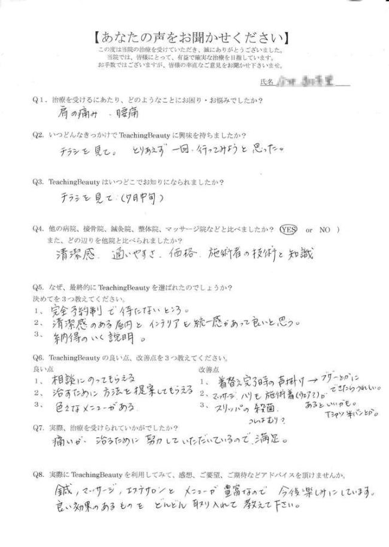
【患者様の口コミ・患者様の声 K,I様 40代 女性】
1、治療を受けるにあたり、どのようなことにお困り・お悩みでしたか？
四十肩（重度）、可動域制限：鍼灸治療
慢性腰痛：鍼灸治療、姿勢矯正、マッサージ
肩の痛み、腰痛
２、いつどんなきっかけでTeaching Beauty鍼灸整骨院に興味を持ちましたか？
オープン時のチラシを見て。とりあえず、一回行ってみようと思った。
３、TeachingBeauty鍼灸整骨院はいつどこでお知りになりましたか？
チラシを見て
４、他の病院、接骨院、整体院、マッサージ院などと比べましたか？
はい
また、どのあたりを他院と比べましたか？
清潔感、通いやすさ、価格、施術者の技術と知識
５、なぜ、最終的にTeachingBeauty鍼灸整骨院を選ばれたのでしょうか？
①完全予約制で待たない所
②清潔感のある屋内とインテリアも統一感があってとても良いと思う。
③納得のいく説明
6、TeachingBeauty鍼灸整骨院の良い点、改善点を３つ教えてください。
【良い点】
①気軽に相談にのってもらえる
②治すために方法を提案してもらえる
③色々なメニューがある
【改善点】
①着替え完了時の声掛け。ブザーなどに出来たら嬉しい。（現在改善済み。）
②マッサージ、鍼も施術着（ウエアなど）があるといいかもTシャツ、半パンとか。（現在改善済み）
③スリッパの殺菌（現在改善済み）
7、実際、治療を受けられていかがでしたか？
四十肩治療中は痛みが、治るために努力していただいているので満足。
現在は肩の痛みも全くなく好きなゴルフを行えています。
8、実際にTeachingBeauty鍼灸整骨院を利用してみて、感想、ご要望、ご期待などのアドバイスをいただけませんか？
鍼、マッサージ、エステサロンとメニューが豊富なので今後が楽しみです。
良い効果のあるものをどんどん取り入れて教えてください。
横浜市在住 20代女性 小野澤恵様
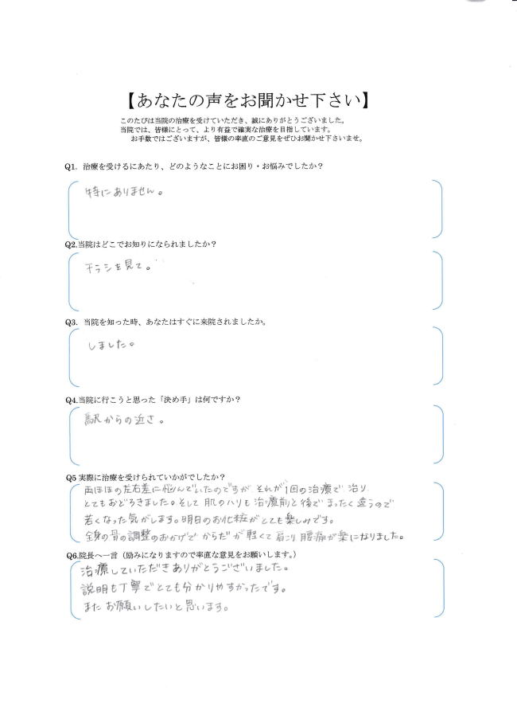
【患者様の口コミ・患者様の声 M、O 20代 女性】
1、治療を受けるにあたり、どのようなことにお困り・お悩みでしたか？
小顔矯正
２、いつどんなきっかけでTeaching Beauty鍼灸整骨院に興味を持ちましたか？
チラシを見て来院した。
３、TeachingBeauty鍼灸整骨院はいつどこでお知りになりましたか？
柔道整復師養成施設の大学校にへ大宮先生に聞いて知りました。
４、当院を知った時、あなたはすぐに来院されましたか。
はい
５、当院行こうと思った「決め手」は何ですか？
駅からの近さ
6、実際に治療を受けられてどうでしたか？
両ほほの左右差に悩んでいたのですが、それが1回の治療で治りとても驚きました。
そして、肌のハリも治療前と後で全く違うので若くなった気がします。明日のお化粧がとても楽しみです。
全身の骨の調整のおかげで体が軽くて肩こり、腰痛が楽になりました。
7、TechingBeauty鍼灸整骨院へのアドバイスをお願いします。（励みになりますので率直な意見をお願いします。）
説明も丁寧でとても分かりやすかったです。
また、お願いしたいと思います。
ありがとうございました。
世田谷区在住 50代女性 K,I様

【患者様の口コミ・患者様の声 K,I様 50代 女性】
1、治療を受けるにあたり、どのようなことにお困り・お悩みでしたか？
頚椎椎間板ヘルニア：鍼灸治療、姿勢矯正
首の痛みとシビレで困っていました。
２、いつどんなきっかけでTeaching Beauty鍼灸整骨院に興味を持ちましたか？
小さい頃から親が鍼灸を受けていたので馴染み深いことが前提にあり、近くにあったので。
３、TeachingBeauty鍼灸整骨院はいつどこでお知りになりましたか？
チラシを見て
４、他の病院、接骨院、整体院、マッサージ院などと比べましたか？
はい
また、どのあたりを他院と比べましたか？
技術を他院と比べました。
５、なぜ、最終的にTeachingBeauty鍼灸整骨院を選ばれたのでしょうか？
①技術力
②接客力
③オシャレ
6、TeachingBeauty鍼灸整骨院の良い点、改善点を３つ教えてください。
【良い点】
①おしゃれ
②技術力
③接客力
【改善点】
①治療中にかかっている音楽（現在は改善済み）
②入り口にアロマの香りがあると良い（現在は改善済み）
③冬場は乾燥するので加湿器があるとよいと思います。
7、実際、治療を受けられていかがでしたか？
痛みもすぐに治まり効果がすぐに出るので良かったです。
8、実際にTeachingBeauty鍼灸整骨院を利用してみて、感想、ご要望、ご期待などのアドバイスをいただけませんか？
特にありません。
▶さらに口コミを見る
▶このページの最初に戻る
Ｔｅａｃｈｉｎｇ Ｂｅａｕｔｙ

〒154-0014
東京都世田谷区新町3-21-1
さくらウェルガーデン3F
TEL：
03-6413-7803
→アクセス
診療時間
【通常診療】
月火金土
午前：09:00～13:00
午後：15:00～19:00
木曜日
午前：休診
午後：15:00～19:00
※当日予約可
休診日
水、木(午前)、日、祭日
夜間診療
月火木金土／19:00～21:00
※通常価格の1.5倍料金
※当日の19時までにご予約の場合のみ
※往診の場合も19時までにご予約下さい
早朝診療
月火木金土／07:00～09:00
※通常価格の2倍料金
※前日の19時までにご予約の場合のみ
交通事故・労災・
各種保険取扱い